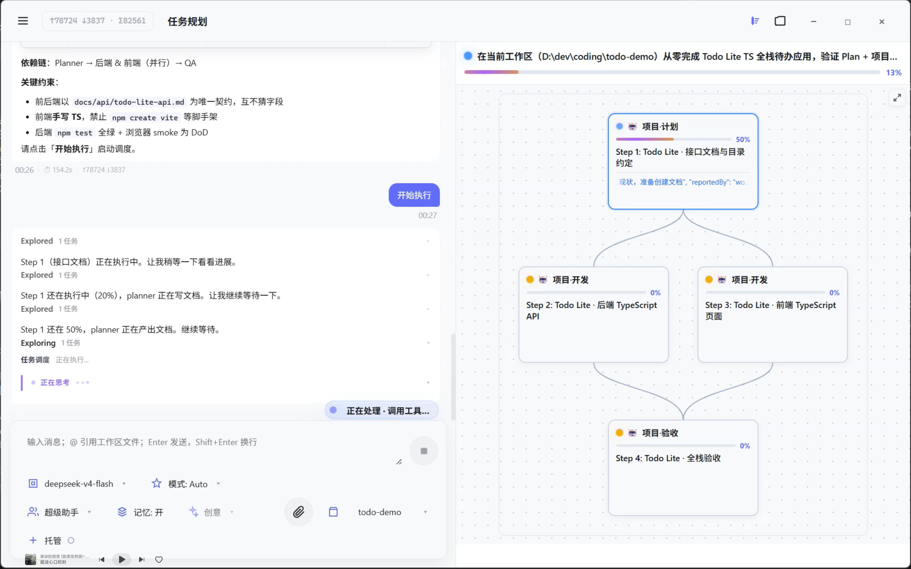
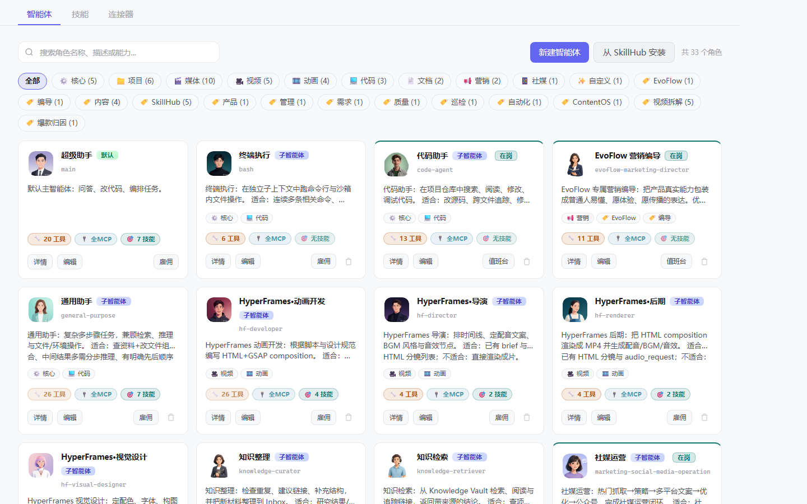
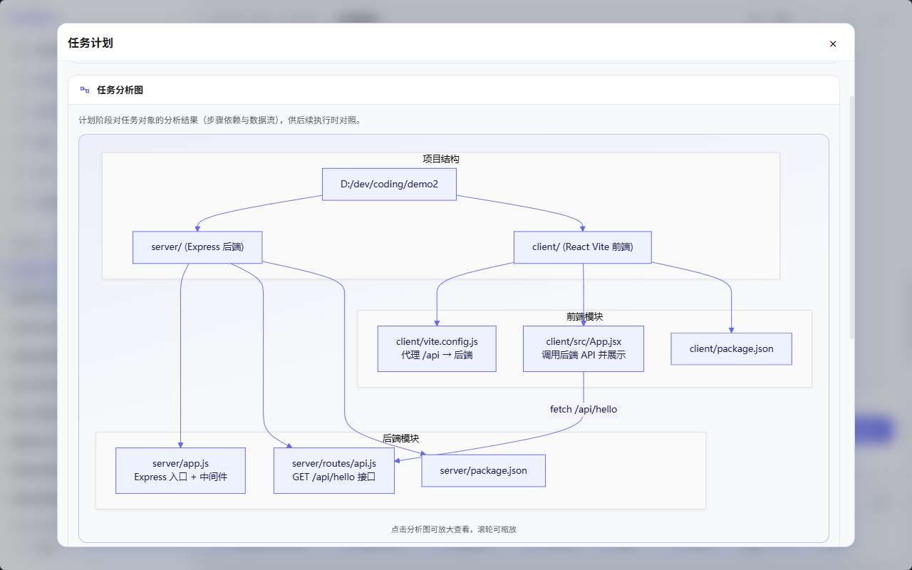
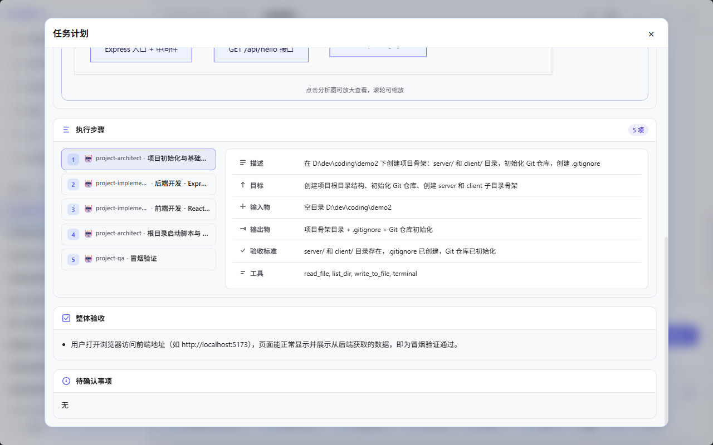
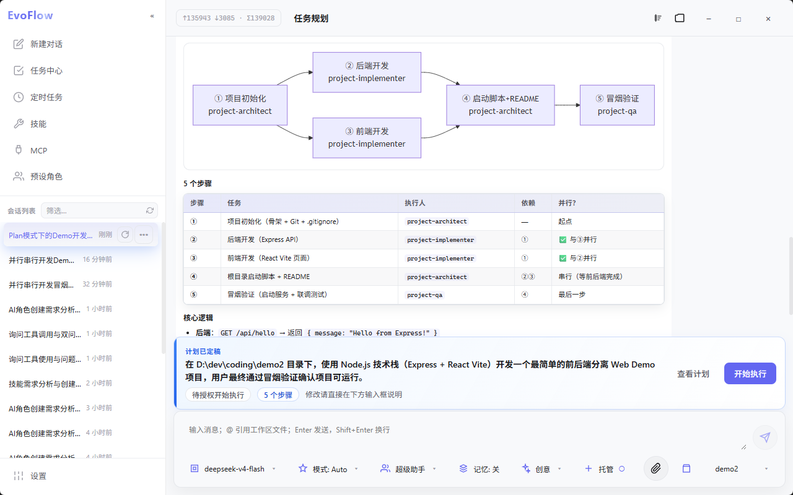
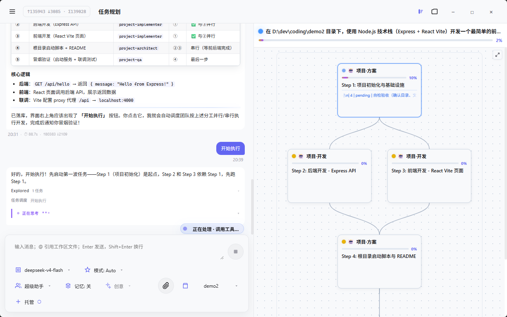
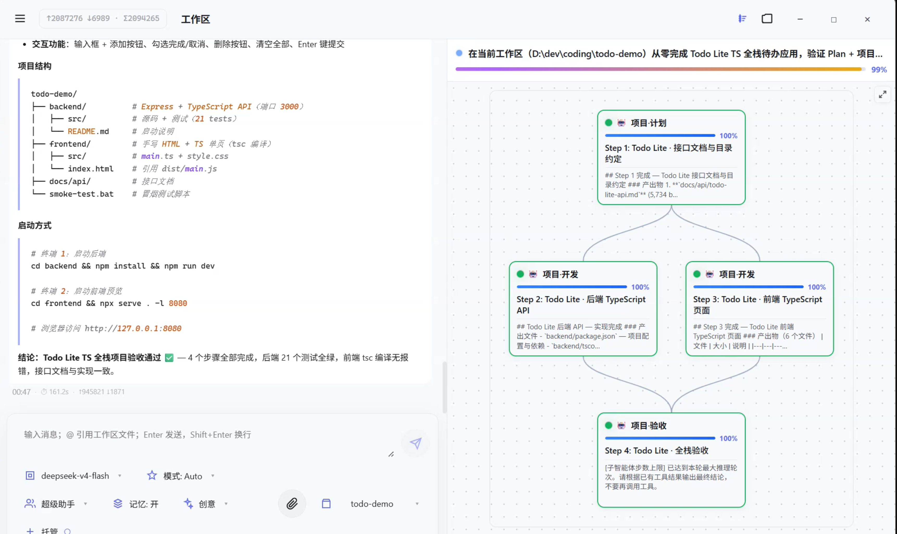

长任务易中断
多步任务中途上下文漂移、会话断开，难以自动推进到验收。
→ 交付不可预期，需人工值守
从需求输入、规划确认到智能体团队分工执行与验收交付
Plan 模式要解决的核心问题，以及 EvoFlow 的整体协作范式
Plan 模式与 Agent Teams 针对以下问题，提供可分工、可协作、可验收的解决路径。
多步任务中途上下文漂移、会话断开，难以自动推进到验收。
→ 交付不可预期，需人工值守
需求未澄清就开始改代码、跑命令，结果偏离预期。
→ 返工成本高
往往由单一通用 Agent 包办全流程，没有「专门的角色做专业的事」——架构、开发、测试、审查各用所长难以落地。
→ 复杂任务质量不稳，专业环节做不深
工具全开、重复推理，使用成本持续上升。
→ 难以规模化使用
用户手动分配子任务、盯进度，无法形成稳定协作流程。
→ 难以无人值守
Supervisor 超级智能体负责全局主控，Agent Teams 智能体团队按专业角色分工——让专门的角色做专业的事，用户在整个过程中可见、可确认、可干预。
从用户提出目标到最终交付的六个阶段与协作状态
从用户提出目标，到多智能体协作完成交付的完整过程。
选场景 · 绑工作区 · 描述目标
主控智能体结构化追问 · 侧栏确认
只读调研 · 能力对照
结构化计划 · 查看/修改
用户授权 · 主控调度派发
监控干预 · 验收交付
| 阶段 | 关键角色 | 用户动作 |
|---|---|---|
| 启动 | 用户 | 选场景、绑工作区、描述目标 |
| 澄清 | 主控智能体 | 回答侧栏问卷 |
| 摸底 | 主控智能体 + 只读子任务 | 等待调研与能力对照 |
| 计划 | 主控智能体 | 查看计划、提出修改 |
| 执行 | 主控调度 + 智能体团队 | 点击「开始执行」 |
| 收尾 | 主控智能体监工 | 验收结果、领取交付物 |
规划期 → 确认条 → 执行 → 验收 → 完成
输入需求；可能出现澄清问卷
调研、摸排、撰写计划；规划期禁止产生副作用操作
「查看计划」「开始执行」「修改计划」
已点「开始执行」，系统准备派发
子任务工作流；多智能体可并行或按依赖串行执行
主控智能体对照验收清单执行测试与核对
交付物链接 + 结果小结
需求澄清、调研摸底、能力匹配与计划前置条件
系统响应：自动进入规划中，主控智能体接管后续流程。

主控智能体发起结构化澄清问卷（侧栏展示，单次最多 3 问）
| 澄清类型 | 典型场景 |
|---|---|
| 信息缺失 | 缺目标、范围、交付物、验收标准 |
| 需求歧义 | 「优化一下」——优化什么、做到什么程度？ |
| 方案选择 | 技术栈、架构路线 A/B |
| 风险确认 | 删数据、改生产配置等 |
| 建议确认 | 主控建议方案，请用户拍板 |
规划期保护机制：澄清与规划完成前，禁止写文件、跑命令等产生副作用的操作。
| 谁 | 做什么 |
|---|---|
| 主控智能体 | 拆解调研范围、综合结论、判断是否满足写计划条件 |
| 只读子任务 | 读仓库结构、文档、现有能力；只调研、不改动 |
分工原则：主控智能体不亲自承担大篇幅读代码、跑命令、产出交付物等工作
为每一步选「做得成这件事」的执行人
典型团队包括：方案、计划、开发、审查、质量保障等角色。

当现有智能体无法满足任务需求时，可在用户确认后补充对应能力的执行角色
能力摸排后，主控智能体向用户说明：缺少哪类能力、将影响哪些步骤，现有团队中没有「做得成这件事」的角色。
通过澄清问卷或对话确认，询问用户是否同意新建智能体角色；未经用户同意，不擅自创建或写入计划。
用户同意后，委派只读子任务协助设计并创建角色：从技能列表挂载所需技能，从工具列表配置可调用工具，形成与该步骤匹配的执行能力。
新角色可用后，将其指定为对应步骤的执行人，再生成或更新结构化计划，确保「人岗匹配」门禁成立。
主控智能体负责判断缺口与协调创建，不亲自搭建角色配置；创建过程本身也通过只读/设计类子任务完成，保持规划阶段职责清晰。
Plan 落库前，必须同时满足以下三项。
目标、范围、交付物、验收标准明确
只读调研子任务已有可支撑规划的结论
每步执行人与能力对照表一致
任一未满足 → 继续澄清、调研或能力配置，不生成正式计划
结构化计划的组成、确认机制与执行授权
| 组成部分 | 说明 |
|---|---|
| 目标 | 本次协作要达成的总目标 |
| 执行步骤 | 带前后依赖关系的步骤列表 |
| 任务分析图 | 模块结构、调用链、数据流等分析结果（非简单步骤顺序图） |
| 每步详情 | 执行人、目标、输入物、输出物、验收标准 |
| 整体验收清单 | 任务收尾时逐项核对的验收项 |


计划定稿后，输入框上方出现确认条 — 不是聊天里口头说「开始吧」
| 按钮 | 作用 |
|---|---|
| 查看计划 | 打开结构化计划弹窗（分析图 + 步骤详情） |
| 修改计划 | 在对话中说明修改意见，主控智能体重新生成计划 |
| 开始执行 | 唯一正式授权入口 — 进入执行阶段 |

主控智能体不再追问「是否开始执行」；界面已提供授权按钮，等待用户主动确认。
若计划内容变更，执行授权自动撤销，用户需重新点击「开始执行」。
→ 降低误触、避免「计划改了却还在跑旧版」
主控调度、团队协作、进度监控、干预修正与跨子任务协作
| 环节 | 主控智能体做什么 |
|---|---|
| 派发 | 按步骤依赖关系，启动当前可执行的子任务 |
| 跟进 | 持续查看各子任务进度、状态与阻塞原因 |
| 推进 | 上游步骤完成后，自动启动下一批（通常无需逐步手动触发） |
| 异常 | 失败重试、续接会话、更换执行策略（同一步骤最多重试 3 次） |
角色定位：监工 — 负责拆解、选人、跟进与验收；不替代子智能体完成专项交付工作。
典型分工：架构设计 → 实现计划 → 编码 → 代码审查 → 质量测试

主控智能体与用户均可实时掌握智能体团队与各子任务的执行情况
| 界面 | 可见信息 |
|---|---|
| 主会话 | 流式对话及各子任务执行过程回传 |
| 协作侧栏 / 工作流面板 | 子任务列表、步骤依赖关系、运行状态、进度百分比 |
| 任务中心 | 历史任务、批量操作、暂停 / 恢复 / 终止 |
主控智能体在执行阶段持续读取各团队智能体的运行状态与任务进度，据此决定下一步调度；用户在同一界面同步可见，全程透明可观测。
当某个步骤出现问题时，主控智能体可采取多种手段纠正，而非等待任务自然失败
| 干预方式 | 适用场景 | 效果 |
|---|---|---|
| 发出修正指令 | 子任务方向偏差、理解有误、需补充约束 | 向该子任务注入新的执行说明，在原有步骤内继续修正 |
| 重新执行 | 该步骤产出不可用、需从零重做 | 重置并重新运行该子任务（同一步骤最多重试 3 次） |
| 委派其他智能体 | 当前执行人不具备所需能力，或多次修正仍无法完成 | 更换执行人或新增子任务，由更合适的智能体承接 |
| 续接会话 | 编码类长任务需在同一会话中继续 | 接续既有工作上下文，避免重复劳动 |
| 中断子任务 | 需立即停止当前步骤 | 终止该子任务运行，等待主控重新决策 |
任务级控制：暂停 / 恢复 / 终止整项协作任务；敏感工具操作须经用户审批后执行。
执行过程中，尚未完成的子智能体可向已完成的子智能体询问必要信息
这一机制减少了「因缺信息而阻塞 → 主控中转 → 重试」的往返，让子智能体在必要时直接获取上下文，同时保持各步骤边界清晰、审计可追溯。
当整体任务出现跑偏时，用户可随时介入并发出修正指示
在主会话中说明整体方向偏差、优先级变化或新的约束。主控智能体据此调整后续调度，并对相关子任务发出修正指令、重新执行或改派其他智能体。
用户也可针对某个具体步骤，直接向对应子智能体发出修正提示（或通过主控定向转达）。适用于局部实现偏离预期、需即时纠正的场景。
Plan 模式并非「提交后不可更改」的自动运行：用户在执行全程保留对方向与节奏的主动权，与主控智能体的监工机制形成互补。
| 维度 | 普通对话 | Plan 模式 |
|---|---|---|
| 计划 | 口头 / 临时 | 持久化结构化计划 |
| 执行 | 随时可能产生副作用 | 用户授权后才开始执行 |
| 分工 | 单一智能体或临时安排 | 智能体团队 + 步骤依赖 |
| 进度 | 难以追踪 | 子任务列表 + 工作流面板 |
| 验收 | 主观判断 | 逐步验收标准 + 整体验收清单 |
| 干预 | 只能发送新消息 | 修正指令 / 重新执行 / 改派 / 暂停等 |
| 协作 | 无正式子任务边界 | 子任务可相互问询、主控可统一干预 |
分层验收、成果交付与模式价值
协作阶段：执行中 → 验收中 → 总结 → 已完成

工具按需加载、减少无效消耗；长任务自动推进，降低人工值守成本。
澄清确认、计划授权、执行监控、主控干预与用户方向修正形成完整控制链。
结构化输入输出、逐步验收标准与整体验收清单，保障交付质量可核对。
智能体团队、技能与工具可按需配置；缺能力时经用户同意即可补充角色。
EvoFlow Plan 模式将「一句话需求」转化为可观测、可确认、可验收、可修正的协作闭环。